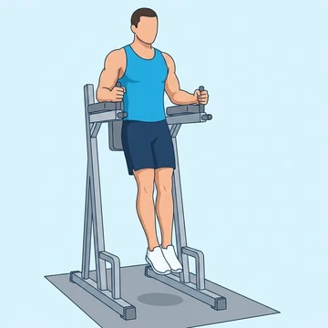
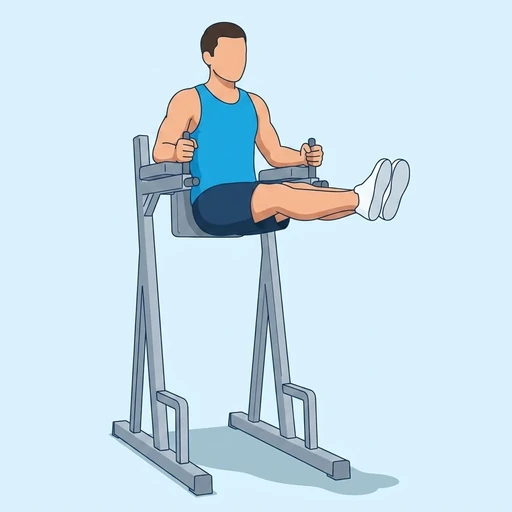
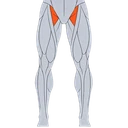
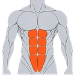
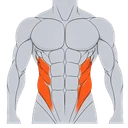
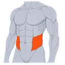

Captain's Chair Leg Raise
A bodyweight core exercise on a captain's chair that targets the lower abs and hip flexors with straight legs for greater difficulty.
Core · Bodyweight · Intermediate


Muscles worked by the Captain's Chair Leg Raise
Primary

Hip FlexorsHip Flexor Muscles
AbsRectus AbdominisSecondary

ObliquesOblique Abdominals
Deep CoreTransversus AbdominisAlso called: hip flexor, iliopsoas, psoas, iliacus, hip flexors, abs.
Equipment
No equipment — this is a bodyweight exercise.
How to do the Captain's Chair Leg Raise
- Position yourself in the captain's chair with your back flat against the pad and forearms on the armrests.
- Let your legs hang straight down.
- Keeping your legs straight, raise them until parallel with the floor or higher.
- Hold briefly at the top, then lower slowly.
- Repeat for the desired reps.
Form tips
- Keep your legs as straight as possible throughout.
- Avoid swinging — control the movement with your core.
- For less difficulty, bend the knees slightly.
At a glance
| Body part | Core |
|---|---|
| Category | Strength |
| Force type | Pull |
| Mechanic | Compound |
| Difficulty | Intermediate |
| Equipment | Bodyweight |
| Goals | Hypertrophy, Strength |
| Tags | Core focus |
| MET | 5.0 (metabolic equivalent, for calorie estimates) |
| Unilateral | No |
| Bodyweight | Yes |
| Dataset id | captains-chair-leg-raise |
Captain's Chair Leg Raise in German & Spanish
| German | Beinheben am Stütz |
|---|---|
| Spanish | Elevación de Piernas en Silla Romana |
Descriptions, instructions and tips ship in all three languages in the JSON.
Related exercises
Exercise data (JSON)
The record below is exactly what exercises.json ships for this exercise — names, descriptions, instructions and tips in English, German and Spanish.
{
"id": "captains-chair-leg-raise",
"name_en": "Captain's Chair Leg Raise",
"name_de": "Beinheben am Stütz",
"name_es": "Elevación de Piernas en Silla Romana",
"description_en": "A bodyweight core exercise on a captain's chair that targets the lower abs and hip flexors with straight legs for greater difficulty.",
"description_de": "Eine anspruchsvollere Körpergewichtsübung am Dip-Stütz für die untere Bauchmuskulatur mit gestreckten Beinen.",
"description_es": "Un ejercicio de peso corporal en silla romana para el abdomen bajo con piernas rectas, de mayor dificultad.",
"category": "strength",
"force_type": "pull",
"mechanic": "compound",
"difficulty": "intermediate",
"body_part": "core",
"primary_muscles": [
"hip_flexors",
"rectus_abdominis"
],
"secondary_muscles": [
"obliques",
"transverse_abdominis"
],
"goals": [
"hypertrophy",
"strength"
],
"tags": [
"core_focus"
],
"is_unilateral": false,
"is_bodyweight": true,
"instructions_en": [
"Position yourself in the captain's chair with your back flat against the pad and forearms on the armrests.",
"Let your legs hang straight down.",
"Keeping your legs straight, raise them until parallel with the floor or higher.",
"Hold briefly at the top, then lower slowly.",
"Repeat for the desired reps."
],
"instructions_de": [
"Nimm die Position am Stütz ein, Rücken flach am Polster, Unterarme auf den Auflagen.",
"Lass die Beine gerade herunterhängen.",
"Hebe die gestreckten Beine bis zur Horizontalen oder höher.",
"Kurz halten, dann langsam absenken.",
"Gewünschte Wiederholungsanzahl ausführen."
],
"instructions_es": [
"Colócate en la silla romana con la espalda plana contra el respaldo y los antebrazos en los apoyos.",
"Deja las piernas colgando rectas hacia abajo.",
"Con las piernas rectas, súbelas hasta la horizontal o más arriba.",
"Mantén brevemente arriba, luego baja despacio.",
"Repite el número de repeticiones deseado."
],
"tips_en": [
"Keep your legs as straight as possible throughout.",
"Avoid swinging — control the movement with your core.",
"For less difficulty, bend the knees slightly."
],
"tips_de": [
"Halte die Beine so gerade wie möglich.",
"Vermeide Schwingen — kontrolliere die Bewegung mit dem Rumpf.",
"Bei Bedarf die Knie leicht beugen, um die Übung zu erleichtern."
],
"tips_es": [
"Mantén las piernas lo más rectas posible.",
"Evita el balanceo — controla el movimiento con el core.",
"Dobla ligeramente las rodillas para reducir la dificultad si es necesario."
],
"met": 5.0,
"images": {
"flat": {
"start": "images/flat/captains-chair-leg-raise-start.webp",
"peak": "images/flat/captains-chair-leg-raise-peak.webp"
}
}
}Fetch just this exercise
const { exercises } = await fetch(
"https://exercise-dataset.com/exercises.json"
).then(r => r.json());
const ex = exercises.find(e => e.id === "captains-chair-leg-raise");Free for personal and commercial in-app use with attribution (“Exercise data by RepDB”) — see the license and ready-made attribution snippets. Redistributing the data as a dataset or API is not permitted.